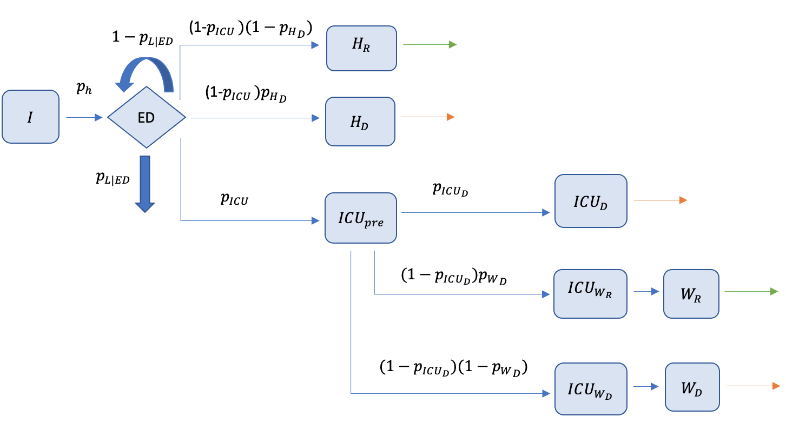

Clinical outcomes Model
\[ \newcommand{ICU}{\text{ICU}} \]

The clinical outcomes model is based on the clinical model from Knock et al. (2021) and is an extension of the work done in Conway et al. (2022) and Commonwealth Government of Australia (2021). This model extends on previous work by restructuring the existing model as a continuous-time, stochastic, IBM, where the neutralising antibody titre and age of the individual determines their transition probabilities. Furthermore, an emergency department (ED) compartment has been added as Moss et al. (2020) noted that limited ED consult capacity can cause a bottleneck that prevents admission to hospital. The full compartmental structure of the clinical outcomes model is depicted in Figure 1 .
All parameters governing the pathway each individual takes through the health system are altered depending upon their individual neutralising antibody titre. The evaluation of these transition probabilities are explained in full in the immunological model.
For symptomatic individual \(i\) in the line-list outputted from the transmission model, we determine if they are hospitalised by sampling, \[ H \sim \text{Bernoulli}(p_{H| I}^i) \] where \(H\) is an indicator variable for hospitalisation and \(p_{H| I}^i\) is the probability that individual \(i\) is hospitalised given symptomatic infection. If individual \(i\) requires hospitalisation they will present to the ED, where they may not be seen due to capacity limitations. ED consult capacity is modelled by admitting only the first \(C_{ED}\) presentations to ED each day. If individual \(i\) is not seen, they will present again to the ED with probability \(1 - p_{\text{L}|\text{ED}}\) after \(\tau_{\text{L}|\text{ED}}\) days sampled from, \[ \tau_{\text{L}|\text{ED}} \sim \text{Gamma}(\kappa_{\text{L}|\text{ED}}, \theta_{\text{L}|\text{ED}}), \] where \(p_{\text{L}|\text{ED}}\) is the probability that an individual does not present again to the ED and \(\kappa_{\text{L}|\text{ED}}\) and \(\theta_{\text{L}|\text{ED}}\) are the shape and rate parameters of the gamma distribution respectively. For individuals that do not return to ED and are therefore not admitted to hospital, their age, neutralisation titre upon exposure and number of presentations to ED are recorded such that these can be used to understand possible excess mortality due to ED capacity limits. If individual \(i\) is admitted to hospital we determine what hospital pathway they will follow.
There are three initial pathways for hospitalised individual \(i\). Individual \(i\) will either recover and be discharged from a ward bed, die in a ward bed, or move to an ICU bed; as the three pathways have different length of stay distributions they modelled as three separate compartments \(H_R\), \(H_D\) and \(\ICU_{pre}\). To determine which pathway individual \(i\) will follow, we sample from, \[ X_h \sim \text{Categorical}({\bf p}_{1}^i) \] where \(X_h\) is the sampled hospital pathway, \[\begin{equation*} {\bf p}_{1}^i= \left[p_{\ICU | H}^i, (1 - p_{\ICU |H}^i)p_{H_D|\ICU^c}^i, (1 - p_{\ICU}^i)(1 - p_{H_D|\ICU^c}^i)\right] \end{equation*}\] is a vector containing the probability of transitioning into \(\ICU_{pre}\), \(H_D\), or \(H_R\) respectively, \(p_{\ICU|H}^i\) is the probability that individual \(i\) is admitted to ICU given they are hospitalised and \(p_{H_D|\ICU^c}^i\) is the probability that individual \(i\) dies on ward given that they are in hospitalised and are not going to ICU. If individual \(i\) requires the ICU, they follow a further ICU pathway to determine their final outcome.
The pathway through the ICU also consists of three different components. Within the ICU pathway an individual will either die in the ICU (\(\ICU_D\)), die in a ward bed after leaving the ICU (\(\ICU_{WD}\)), or recover and be discharged from a ward bed after leaving the ICU (\(\ICU_{WR}\)). We sample which pathway is taken within the ICU from, \[ X_\ICU \sim \text{Categorical}({\bf p}_{2}^i) \] where \(X_\ICU\) is the sampled ICU pathway, \[\begin{equation*} {\bf p}_{2}^i = \left[p_{\ICU_D|\ICU}^i, (1 - p_{\ICU_D|\ICU}^i)p_{W_D|\ICU_D^c}^i, (1 - p_{\ICU_D|\ICU}^i)(1 - p_{W_D|\ICU_D^c}^i)\right] \end{equation*}\] is a vector containing the probability of transitioning into the \(\ICU_D\), \(\ICU_{WD}\) or \(\ICU_{WR}\) compartment respectively, \(p_{\ICU_D|\ICU}^i\) is the probability that individual \(i\) dies in the ICU given they were admitted to ICU and \(p_{W_D|\ICU_D^c}^i\) is the probability that individual \(i\) of dies in a ward bed after leaving ICU without dying. For an individual that transitions into \(\ICU_{WR}\) or \(\ICU_{WD}\), they will move into a further ward compartment, \(W_R\) or \(W_D\), where they will either recover or die respectively.
Finally, the length of stay for individual \(i\) in each compartment is sampled such that, \[ \tau_c \sim \text{Gamma}(\kappa_c, \theta_c) \] where \(\tau_c\) is the time spent in compartment \(c\), and \(\kappa_c\) and \(\theta_c\) are the shape and rate parameter for compartment \(c\) respectively. Uncertainty is incorporated by sampling rate and shape parameters from the posterior estimated for the Australian Delta wave (Tobin et al. 2022).
By generating a clinical timeline for every symptomatic individual, we can calculate hospital admissions, ICU occupancy, ward occupancy and deaths by age in continuous-time. Furthermore, by explicitly incorporating the effects of neutralising antibodies on protection against each outcome, we are able to account for individual level immune responses. Note that we assume that neutralising antibody titre levels do not change the distribution of time spent in any compartment.